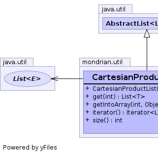
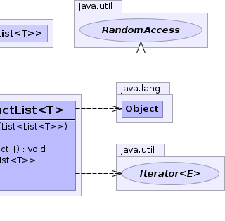

public class CartesianProductList<T> extends AbstractList<List<T>> implements RandomAccess
|  |  |
modCount| Constructor and Description |
|---|
CartesianProductList(List<List<T>> lists) |
| Modifier and Type | Method and Description |
|---|---|
List<T> |
get(int index) |
void |
getIntoArray(int index,
Object[] a) |
Iterator<List<T>> |
iterator() |
int |
size() |
add, add, addAll, clear, equals, hashCode, indexOf, lastIndexOf, listIterator, listIterator, remove, removeRange, set, subListaddAll, contains, containsAll, isEmpty, remove, removeAll, retainAll, toArray, toArray, toStringpublic CartesianProductList(List<List<T>> lists)